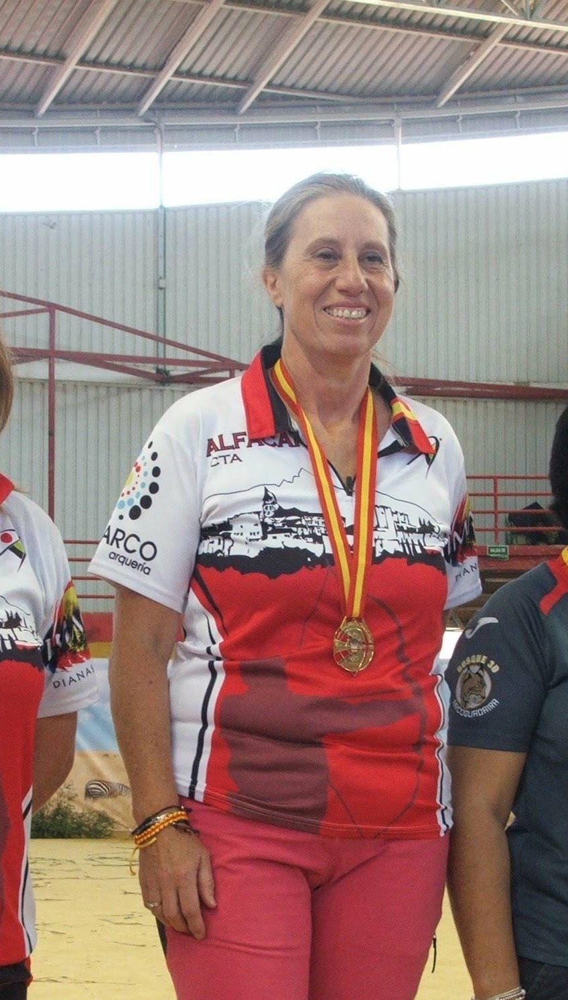
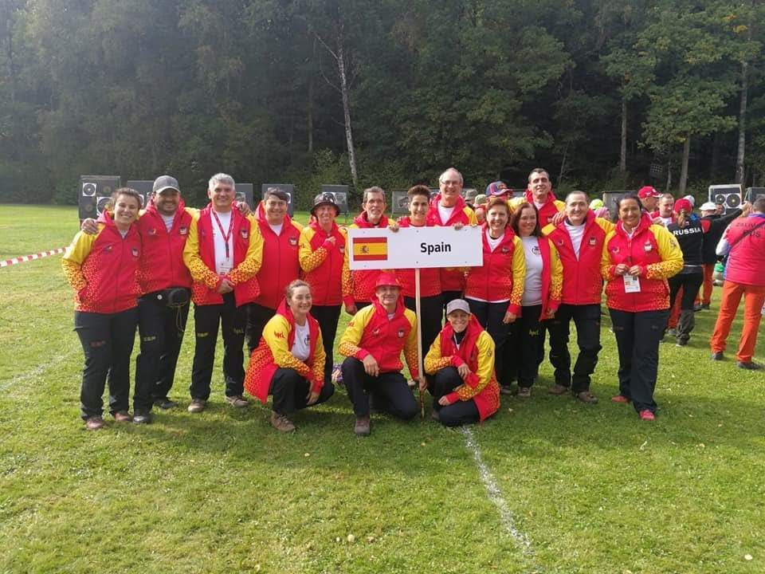

Arco tradicional 2016-2018
-
2018
Campeona de España
Campeonato de España 3D en Sala
-
2018
Subcampeona de España
Campeonato de España de Campo
-
2018
Selección española
Campeonato de Europa · Gotemburgo
-
2016-2018
Medallas en ligas nacionales y autonómicas



